🚀 星域奇航？
Star Realms · 设计：Robert Dougherty & Darwin Kastle · White Wizard Games (Wise Wizard Games) 出版 · 2 人 · 官方英文规则书全文翻译（12 页 · AI 辅助机翻）
本页收录《星域奇航？》（Star Realms, 2014）的原版官方规则书全部 12 页（底本：starrealms.com 官方 FAQ & Rules 页 Rules Documents（Star Realms Box Set 规则书 v1.1E），SRBOX_Rulebook_1.1E_WEB.pdf），逐页随图排列，点击任意图片即可放大查看；每页下方默认折叠了该页的 AI 辅助中文机翻对照，需要时可展开。规则内容归 White Wizard Games (Wise Wizard Games) 及版权方所有，收录仅供个人学习查阅。
整理说明：机翻对照按本站术语口径对齐（牌库/手牌/回合/轮/板块/指示物等），PDF 图文混排页的语序可能与原书视觉顺序略有出入；规则细节请一律以页面上方原书页面为准。
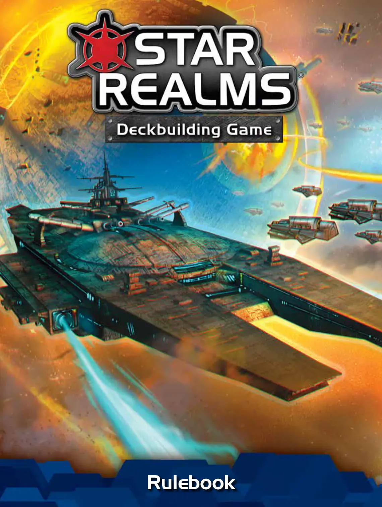
📝 第 1 页 AI 机翻对照（点击展开）
规则书
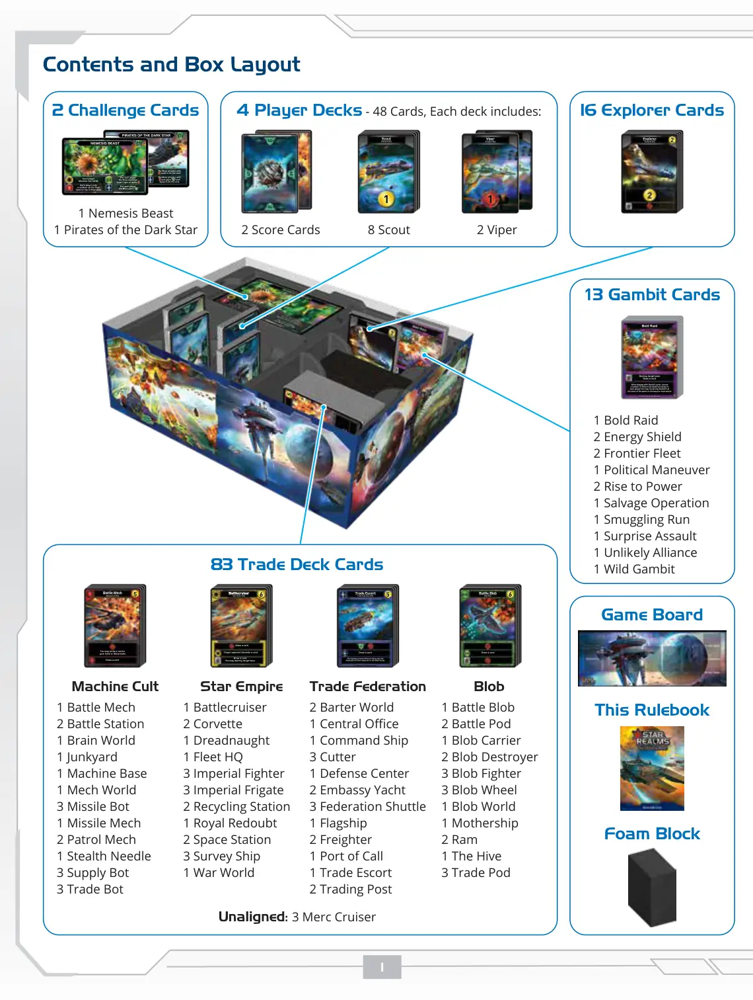
📝 第 2 页 AI 机翻对照（点击展开）
本规则书
泡沫块
内容与盒内布局
16张探索者卡牌
探索者
未结盟飞船
星际领域™ & © 2021 巫师游戏公司
消灭目标基地。
摸一张牌。
星际领域™ & © 2021 巫师游戏公司
在使用诡计卡牌时，选择其中一部分面朝下分发给每位玩家。你可以在游戏开始时或在你的主要阶段揭示任何诡计。
诡计
大胆突袭
4套玩家牌库 - 每套48张牌，每套包括：
2条蝰蛇
8艘侦察舰
未结盟飞船
星际领域™ & © 2021 巫师游戏公司
2张分数牌
星际领域™ & © 2021 巫师游戏公司
星际领域™ & © 2021 巫师游戏公司
83张交易牌库卡牌
未结盟：3艘雇佣巡洋舰
你可以弃掉你手牌或弃牌堆中的一张牌。
摸一张牌。
战斗机甲
机器崇拜飞船
星际领域™ & © 2021 巫师游戏公司
摸一张牌。
战斗黏液
黏液飞船
星际领域™ & © 2021 巫师游戏公司
目标对手弃一张牌。
摸一张牌。
你可以消灭目标基地。
摸一张牌。
战列巡洋舰
星际帝国飞船
星际领域™ & © 2021 巫师游戏公司
重型装甲的护卫舰是联邦对黏液威胁的第一反应。
摸一张牌。
交易护卫舰
交易联邦飞船
星际领域™ & © 2021 巫师游戏公司
游戏版图
25x
玩家
挑战
挑战
星际领域™ & © 2021 巫师游戏公司
星际领域™ & © 2021 巫师游戏公司
Boss攻击力为
并获得
两者
都等于2倍费用。
Boss攻击力为
等于3倍费用。
Boss攻击力为
等于最高费用卡牌的2倍费用。
Boss攻击力为
等于2倍费用。该玩家弃两张牌。
黑星海盗
50x
玩家
挑战
挑战
宿敌野兽
星际领域™ & © 2021 巫师游戏公司
星际领域™ & © 2021 巫师游戏公司
每位玩家
弃两张牌。
对每位玩家，
Boss消灭
目标基地或获得3
每位玩家将
其手牌中的一张随机牌置于其牌库顶。
对每位玩家，
Boss获得
蝰蛇
未结盟飞船
星际领域™ & © 2021 巫师游戏公司
蝰蛇
未结盟飞船
星际领域™ & © 2021 巫师游戏公司
2张挑战卡
1只宿敌野兽
1个黑星海盗
机器崇拜
1台战斗机甲
2座战斗站
1个大脑世界
1个废品场
1个机器基地
1个机甲世界
3枚导弹机器人
1台导弹机甲
2架巡逻机甲
1枚隐形针
3台补给机器人
3台交易机器人
黏液
1团战斗黏液
2个战斗舱
1艘黏液运输舰
2艘黏液驱逐舰
3架黏液战斗机
3个黏液轮
1个黏液世界
1艘母舰
2艘撞击舰
1个蜂巢
3个交易舱
星际帝国
1艘战列巡洋舰
2艘轻型护卫舰
1艘无畏舰
1个舰队总部
3架帝国战斗机
3艘帝国护卫舰
2座回收站
1个皇家堡垒
2座空间站
3艘调查船
1个战争世界
交易联邦
2个贸易世界
1个中央办公室
1艘指挥舰
3艘小型护卫舰
1个防御中心
2艘大使馆游艇
3艘联邦穿梭机
1艘旗舰
2 货船
1 停泊港
1 护航贸易船
2 贸易站
1 大胆突袭
2 能量护盾
2 边境舰队
1 政治操纵
2 权力崛起
1 打捞行动
1 走私行动
1 突袭
1 不可能的联盟
1 冒险赌博
13 赌博卡牌
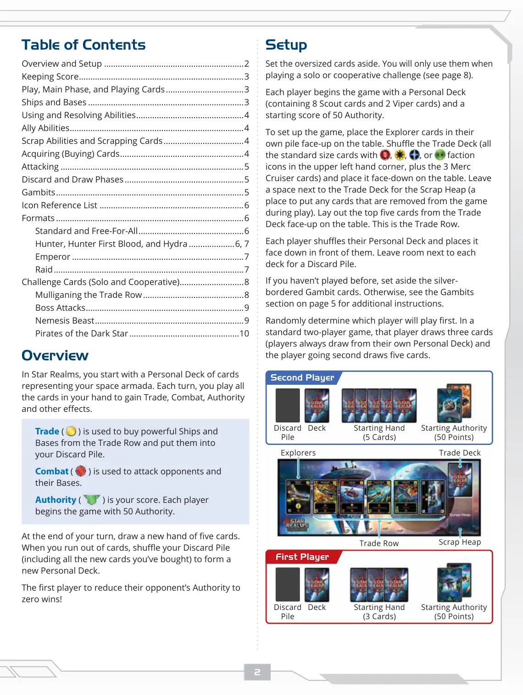
📝 第 3 页 AI 机翻对照（点击展开）
目录
概述和设置..............................................................2
计分........................................................................3
游戏、主要阶段和出牌...................................3
飞船和基地.....................................................................3
使用和解决能力...............................................4
盟友能力............................................................................4
scrap 能力和 scrap 卡牌....................................4
获取（购买）卡牌......................................................4
攻击.................................................................................5
弃牌和摸牌阶段.....................................................5
策略..................................................................................5
图标参考列表................................................................6
游戏模式...................................................................................6
标准和混战..............................................6
猎人、猎人先攻和九头蛇.....................6, 7
皇帝............................................................................7
突袭....................................................................................7
挑战卡牌（单人与合作）............................8
重新整理交易行.............................................8
Boss 攻击.....................................................................9
宿主野兽.................................................................9
暗星海盗.................................................................10
概述
在《Star Realms》中，你开始时拥有一副代表你太空舰队的个人牌库。每个回合，你出掉手牌中的所有卡牌，以获取贸易、战斗、权威和其他效果。
贸易 (
) 用于从交易行购买强大的飞船和基地，并将它们放入你的弃牌堆。
战斗 (
) 用于攻击对手及其基地。
权威 (
) 是你的分数。每位玩家开始游戏时拥有 50 点权威。
在你的回合结束时，摸一张新的五张手牌。当你用完牌时，洗混你的弃牌堆（包括你购买的所有新卡牌）以形成新的个人牌库。
第一个将对手的权威降至零的玩家获胜！
设置
将超大尺寸卡牌放在一边。只有在玩单人或合作挑战时才使用它们（见第 8 页）。
每位玩家开始游戏时拥有一副个人牌库（包含 8 张 Scout 卡牌和 2 张 Viper 卡牌）和 50 点权威的起始分数。
要设置游戏，将 Explorer 卡牌放置在它们
<!--page:N-->
将你的牌库正面朝上放在桌上。洗混交易牌库（所有左上角有
、
、
或
派系图标的标准尺寸卡牌，加上3艘贸易巡洋舰卡牌），然后将其正面朝下放在桌上。在交易牌库旁边留出空间用于废料堆（一个在游戏过程中放置任何被移出游戏的卡牌的地方）。从交易牌库中取出顶部的五张牌正面朝上放在桌上。这就是交易行。
每位玩家洗混自己的个人牌库，并将其正面朝下放在自己面前。在每个牌库旁边留出空间用于弃牌堆。
如果你之前没有玩过，请将银边赌局卡牌放在一边。否则，请参阅第5页的赌局部分获取额外说明。
随机决定哪位玩家先手。在标准双人对局中，先手玩家摸三张牌（玩家总是从自己的个人牌库摸牌），后手玩家摸五张牌。
弃牌堆
牌库
起始手牌
(3张牌)
起始威望
(50分)
先手玩家
废料堆
交易行
交易牌库
探险者
起始威望
(50分)
起始手牌
(5张牌)
牌库
弃牌堆
后手玩家
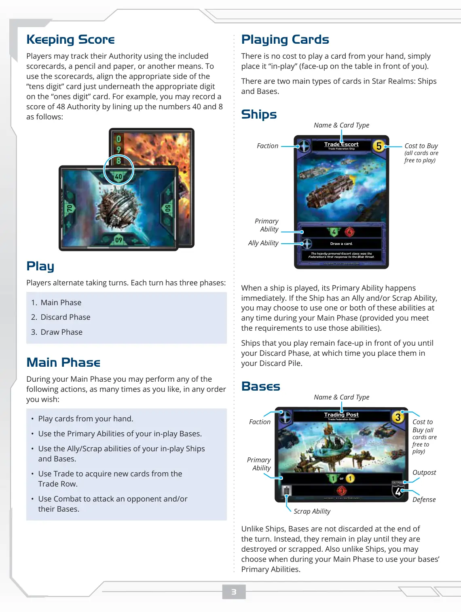
📝 第 4 页 AI 机翻对照（点击展开）
玩卡牌
从手牌中打出卡牌没有成本，只需将其"打出"（正面朝上放在你面前的桌上）。
在《星际领域》(Star Realms) 中主要有两种类型的卡牌：战舰和基地。
战舰
重装甲的护卫舰级是联邦对"Blob"威胁的首次回应。
摸一张牌。
贸易护卫舰
贸易联邦战舰
Star Realms ™ & © 2021 Wise Wizard Games
| 名称与卡牌类型 | 购买成本<br>(所有卡牌打出均免费) | 主要能力 | 派系 | 盟友能力 |
|--------------|-----------------------------|--------|------|---------|
| 贸易护卫舰 | 2 | 摸一张牌 | 贸易联邦 | 当你打出此牌时，你可以选择 Scrap（报废）一张你手牌中的卡牌。 |
当战舰被打出时，其主要能力会立即生效。如果该战舰有盟友和/或报废能力，你可以在你的主要阶段的任何时候选择使用一项或两项这些能力（前提是你满足使用这些能力的条件）。
你打出的战舰会正面朝前留在你面前，直到你的弃牌阶段，届时你将它们放入你的弃牌堆。
基地
或
贸易站
贸易联邦基地
Star Realms ™ & © 2021 Wise Wizard Games
| 名称与卡牌类型 | 购买成本<br>(所有卡牌打出均免费) | 报废能力 | 防御力 | 前哨站 | 主要能力 | 派系 |
|--------------|-----------------------------|--------|-------|-------|--------|------|
| 贸易站 | 3 | 废弃此牌：获得3点贸易 | 5 | 否 | 获得3点贸易 | 贸易联邦 |
与战舰不同，基地不会在回合结束时被弃置。相反，它们会留在场上直到被摧毁或报废。也与战舰不同，你可以在你的主要阶段的任何时候选择使用你的基地的主要能力。
记分
玩家可以使用随附的记分卡、铅笔和纸或其他方式追踪他们的威望值。要使用记分卡，将"十位数"卡的适当一侧与"个位数"卡上的相应数字对齐。例如，你可以通过将数字40和8按如下方式对齐来记录48点威望的分数：
Star Realms ™ & © 2021 Wise Wizard Games
Star Realms ™ & © 2021 Wise Wizard Games
回合
玩家轮流进行回合。每个回合有三个阶段：
1. 主要阶段
2. 弃牌阶段
3. 摸牌阶段
主要阶段
在你的主要阶段，你可以按照你喜欢的任何顺序，执行以下任何操作，次数不限：
• 从手牌中打出卡牌。
• 使用你场上基地的主要能力。
• 使用你场上战舰和基地的盟友/报废能力。
• 使用贸易来从贸易行获取新卡牌。
• 使用战斗来攻击对手和/或他们的基地。
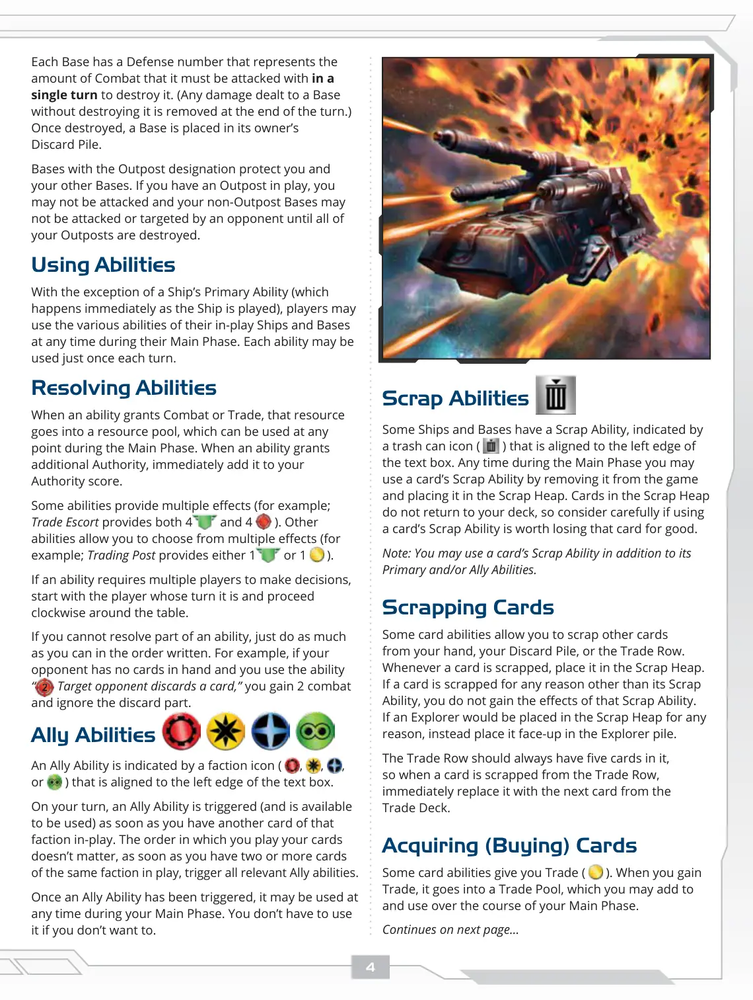
📝 第 5 页 AI 机翻对照（点击展开）
废置能力
一些飞船和基地拥有废置能力，由垃圾桶图标（
）表示，该图标对齐于文本框的左边缘。在主要阶段期间，你可以通过将卡牌从游戏中移除并将其放入废置堆来使用该卡牌的废置能力。废置堆中的卡牌不会返回你的牌库，因此请仔细考虑使用卡牌的废置能力是否值得永久失去该卡牌。
注意：除了主要能力和/或盟友能力外，你还可以使用卡牌的废置能力。
废置卡牌
一些卡牌能力允许你从你的手牌、弃牌堆或贸易行中废置其他卡牌。每当一张卡牌被废置时，将其放入废置堆。如果卡牌因废置能力以外的任何原因被废置，你不会获得该废置能力的效果。如果探索者因任何原因将被放入废置堆，则改为将其正面朝上放入探索者堆。
贸易行应始终保持五张卡牌，因此当一张卡牌从贸易行中被废置时，立即用贸易牌堆中的下一张卡牌替换它。
获取（购买）卡牌
一些卡牌能力给予你贸易（
）。当你获得贸易时，它会进入一个贸易池，你可以在你的主要阶段期间添加和使用该贸易池中的贸易。
续下一页...
每个基地都有一个防御数值，表示在单个回合中必须用多少战斗值攻击才能摧毁它。（对基地造成的任何未摧毁基地的伤害在回合结束时被移除。）一旦被摧毁，基地会被放入其拥有者的弃牌堆。
带有前哨站指定的基地保护你和你的其他基地。如果你有一个前哨站在场上，在所有你的前哨站被摧毁之前，你不能被攻击，你的非前哨站基地也不能被对手攻击或成为目标。
使用能力
除了飞船的主要能力（在飞船打出时立即发生）外，玩家可以在他们的主要阶段期间的任何时间使用他们场上的飞船和基地的各种能力。每张能力每个回合只能使用一次。
解决能力
当一个能力提供战斗或贸易时，该资源进入一个资源池，可以在主要阶段期间的任何时间使用。当一个能力提供额外的权威值时，立即将其添加到你的权威值分数中。
一些能力提供多种效果（例如；贸易护航提供4
和4
）。其他能力允许你从多种效果中选择（例如；贸易站提供1
或1
）。
如果一个能力需要多个玩家做出决定，从当前回合的玩家开始，然后顺时针进行。
如果你无法解决能力的一部分，就按照书写的顺序尽可能多地执行。例如，如果你的
当对手没有手牌而你使用能力"2 目标对手弃一张牌"时，你获得2点战斗力并忽略弃牌部分。
盟友能力
盟友能力由一个派系图标（
、
、
或
）表示，该图标位于文本框的左边缘。
在你的回合中，只要你场上有一张相同派系的卡牌，盟友能力就会被触发（并可使用）。你出牌的顺序无关紧要，一旦你场上拥有两张或更多相同派系的卡牌，就触发所有相关的盟友能力。
一旦盟友能力被触发，你可以在你的主要阶段的任何时间使用它。如果你不想使用，就不必使用。
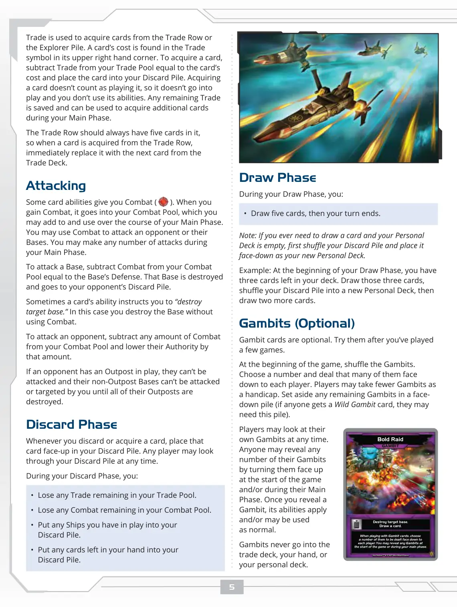
📝 第 6 页 AI 机翻对照（点击展开）
摸牌阶段
在你的摸牌阶段，你：
• 摸五张牌，然后你的回合结束。
注意：如果你需要摸牌而你的个人牌库已空，先洗混你的弃牌堆并将其面朝下放置作为你的新个人牌库。
示例：在你的摸牌阶段开始时，你的牌库中还剩三张牌。摸取这三张牌，将你的弃牌堆洗混成一个新的个人牌库，然后再摸两张牌。
诡计牌（可选）
诡计牌是可选的。在玩过几局游戏后尝试使用它们。
游戏开始时，洗混诡计牌。选择一个数量，将相应数量的诡计牌面朝下分发给每位玩家。玩家可以少拿一些诡计牌作为让分。将剩余的诡计牌面朝下放在一旁（如果有人获得一张万能诡计牌，他们可能需要这堆牌）。
玩家可以在任何时候查看自己的诡计牌。
任何人都可以在游戏开始时和/或在其主要阶段期间，通过将任意数量的诡计牌面朝上翻开，来揭示这些诡计牌。一旦你揭示了一张诡计牌，其能力就会生效和/或可以正常使用。
诡计牌永远不会进入交易牌库、你的手牌或你的个人牌库。
交易
交易用于从交易行或探索堆获取卡牌。卡牌的费用在其右上角的交易符号中找到。要获取一张卡牌，从你的交易池中减去等于该卡牌费用的交易值，并将该卡牌放入你的弃牌堆。获取卡牌不算作打出它，因此它不会进入游戏，你也不会使用其能力。任何剩余的交易值会被保存，可以在你的主要阶段用于获取额外的卡牌。
交易行应始终保持有五张牌，因此当从交易行获取一张牌时，立即用交易牌库中的下一张牌替换它。
攻击
一些卡牌能力让你获得战斗值（）。当你获得战斗值时，它进入你的战斗池，你可以在你的主要阶段期间添加和使用它。你可以使用战斗值攻击对手或他们的基地。在你的主要阶段，你可以进行任意次数的攻击。
要攻击一个基地，从你的战斗池中减去等于该基地防御力的战斗值。该基地被摧毁并进入对手的弃牌堆。
有时卡牌能力指示你"摧毁目标基地"。在这种情况下，你使用战斗值来摧毁基地。
要攻击对手，从你的战斗池中减去任意数量的战斗值，并将他们的权威值降低相应数量。
如果对手有一个前哨站在场，他们不能被攻击，他们的非前哨站基地也不能被你攻击或锁定，直到他们所有的前哨站都被摧毁。
弃牌阶段
无论何时你弃牌或获取一张牌，将该牌面朝上放入你的弃牌堆。任何玩家都可以随时查看你的弃牌堆。
在你的弃牌阶段，你：
• 失去你贸易池中剩余的任何贸易。
• 失去你战斗池中剩余的任何战斗。
• 将你场上所有的飞船放入你的弃牌堆。
• 将你手牌中剩余的所有卡牌放入你的弃牌堆。
摧毁目标基地。
摸一张牌。
Star Realms™ & © 2021 Wise Wizard Games
当使用赌局卡牌时，选择一定数量的牌面朝下分发给每位玩家。你可以在游戏开始时或在你的主要阶段期间揭示任何赌局。
赌局
大胆突袭
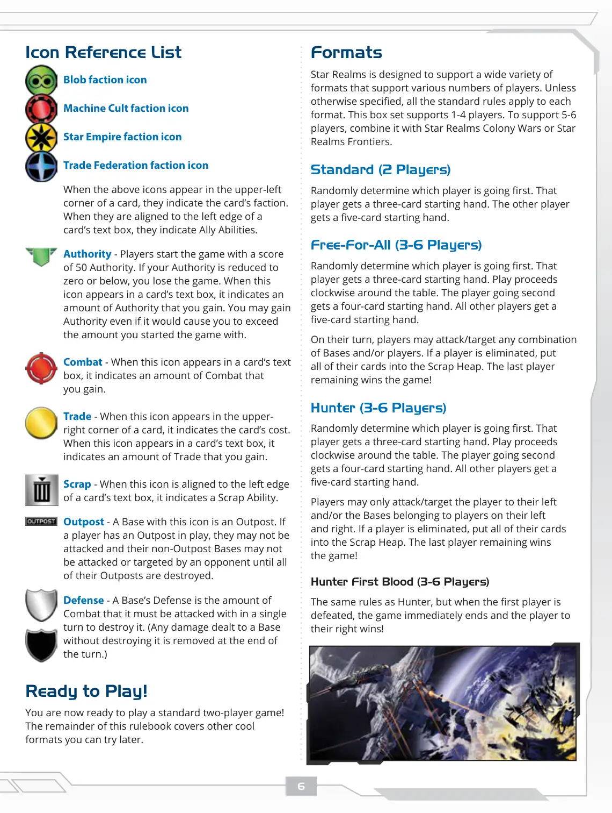
📝 第 7 页 AI 机翻对照（点击展开）
游戏形式
《星际领域》设计支持多种玩家数量的游戏形式。除非另有说明，所有标准规则均适用于每种形式。本盒装支持1-4名玩家。要支持5-6名玩家，请将其与《星际领域：殖民地战争》(Star Realms Colony Wars)或《星际领域：边境》(Star Realms Frontiers)组合使用。
标准（2人）
随机决定哪位玩家先手。该玩家获得3张起始手牌。另一位玩家获得5张起始手牌。
自由混战（3-6人）
随机决定哪位玩家先手。该玩家获得3张起始手牌。游戏按顺时针方向进行。第二位玩家获得4张起始手牌。所有其他玩家获得5张起始手牌。
在自己的回合，玩家可以攻击/任意组合的目标是基地和/或玩家。如果一名玩家被淘汰，将其所有牌放入废料堆。最后剩下的玩家赢得游戏！
猎人模式（3-6人）
随机决定哪位玩家先手。该玩家获得3张起始手牌。游戏按顺时针方向进行。第二位玩家获得4张起始手牌。所有其他玩家获得5张起始手牌。
玩家只能攻击/其左侧的玩家和/或属于其左右两侧玩家的基地。如果一名玩家被淘汰，将其所有牌放入废料堆。最后剩下的玩家赢得游戏！
猎人首杀模式（3-6人）
与猎人模式规则相同，但当第一位玩家被击败时，游戏立即结束，其右侧的玩家获胜！
图标参考列表
Blob派系图标
Machine Cult派系图标
Star Empire派系图标
Trade Federation派系图标
当上述图标出现在卡牌左上角时，它们表示卡牌的派系。当它们对齐到卡牌文本框的左边缘时，它们表示盟友能力。
- 权威(Authority) - 玩家游戏开始时拥有50点权威。如果你的权威降至零或以下，你输掉游戏。当此图标出现在卡牌文本框中时，它表示你获得的权威数量。即使权威数量超过游戏开始时的数量，你也可以获得权威。
- 战斗(Combat) - 当此图标出现在卡牌文本框中时，它表示你获得的战斗数量。
- 贸易(Trade) - 当此图标出现在卡牌右上角时，它表示卡牌的费用。当此图标出现在卡牌文本框中时，它表示你获得的贸易数量。
- 废料(Scrap) - 当此图标对齐到卡牌文本框的左边缘时，它表示废料能力。
- 前哨站(Outpost) - 带有此图标的基地是前哨站。如果玩家场上有一个前哨站，他们不能被攻击，且他们的非前哨站基地不能被
被对手攻击或锁定，直到他们所有的前哨站都被摧毁。
防御 - 一个基地的防御值是它必须在一回合内受到的战斗量才能被摧毁。（任何对基地造成但未摧毁的伤害将在回合结束时被移除。）
准备游戏！
你现在可以开始进行一场标准的双人对战了！
本规则书的其余部分涵盖了你可以稍后尝试的其他酷炫游戏模式。
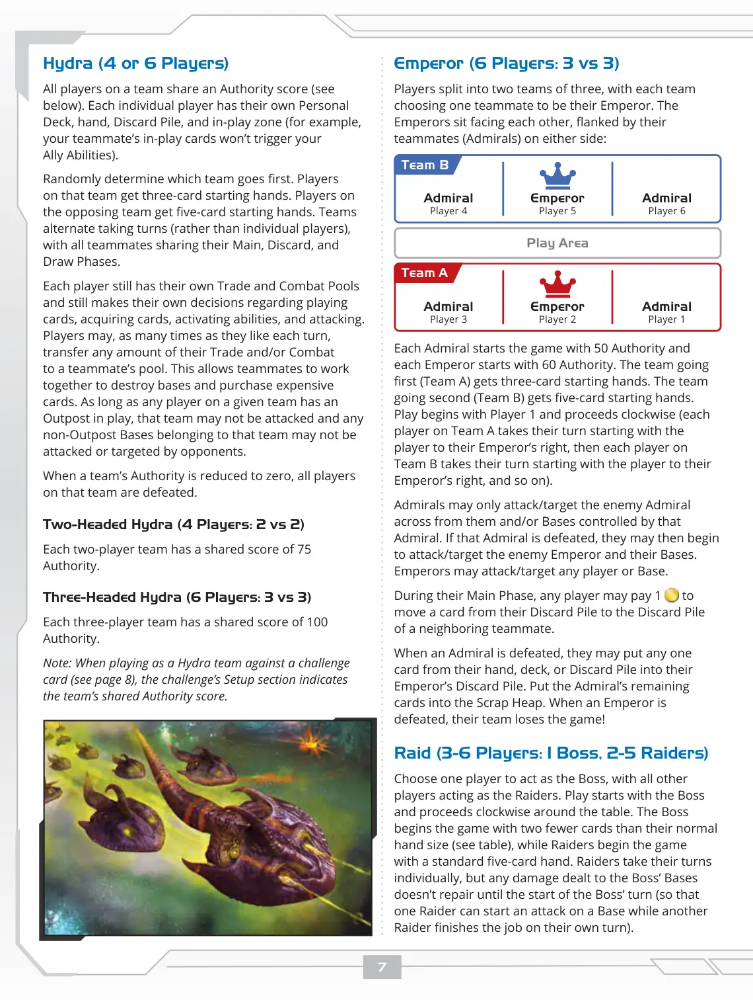
📝 第 8 页 AI 机翻对照（点击展开）
皇帝模式（6人：3对3）
玩家分成两个三人队伍，每支队伍选择一名队友作为他们的皇帝。皇帝面对面就坐，两侧由他们的队友（海军上将）陪同：
每名海军上将开始游戏时拥有50点权威，每名皇帝开始时拥有60点权威。先行动的队伍（队伍A）获得三张起始手牌。后行动的队伍（队伍B）获得五张起始手牌。游戏从玩家1开始，顺时针进行（队伍A的每位玩家从皇帝右侧的玩家开始轮流行动，然后队伍B的每位玩家从他们皇帝右侧的玩家开始轮流行动，依此类推）。
海军上将只能攻击/针对他们正对的敌方海军上将和/或该海军上将控制的基地。如果该海军上将被击败，他们可以开始攻击/针对敌方皇帝及其基地。皇帝可以攻击/针对任何玩家或基地。
在其主要阶段，任何玩家可以支付1点权威，将一张牌从他们的弃牌堆移动到相邻队友的弃牌堆。
当一名海军上将被打败时，他们可以将手牌、牌库或弃牌堆中的任意一张牌放入他们皇帝的弃牌堆。将该海军上将的剩余牌牌放入废料堆。当一名皇帝被打败时，他们的队伍输掉游戏！
突袭模式（3-6人：1名Boss，2-5名突袭者）
选择一名玩家担任Boss，所有其他玩家担任突袭者。游戏从Boss开始，顺时针进行。Boss开始游戏时的手牌比正常手牌少两张（见下表），而突袭者开始游戏时拥有标准的五张手牌。突袭者单独行动，但对Boss基地造成的伤害直到Boss回合开始时才会修复（这样一名突袭者可以在一个基地开始攻击，而另一名突袭者在自己的回合内完成这项工作）。
海军上将
玩家6
皇帝
玩家5
海军上将
玩家4
队伍B
游戏区域
海军上将
玩家1
皇帝
玩家2
海军上将
玩家3
队伍A
九头蛇模式（4人或6人）
队伍中的所有玩家共享一个权威分数（见下文）。每位玩家都有自己的个人牌库、手牌、弃牌堆和场上区域（例如，你队友的场上牌不会触发你的盟友能力）。
随机决定哪支队伍先行动。该队伍的玩家获得三张起始手牌。对手队伍的玩家获得五张起始手牌。队伍轮流行动（而非单个玩家轮流），所有队友共享他们的主要阶段、弃牌阶段和摸牌阶段。
每位玩家仍然拥有自己的交易池和战斗池，并且在出牌、获取牌、激活能力和攻击方面仍然自己做决定。
玩家每回合可以多次
将任意数量的贸易和/或战斗转移给队友的牌池。这使队友能够合作摧毁基地和购买昂贵的卡牌。只要给定团队中的任何玩家有一个前哨站在场，该团队就不能被攻击，并且该团队拥有的任何非前哨站基地也不能被对手攻击或锁定为目标。
当一个团队的权威值降至零时，该团队的所有玩家都被击败。
双头海德拉（4人：2对2）
每个双人团队共享75点权威值。
三头海德拉（6人：3对3）
每个三人团队共享100点权威值。
注意：当作为海德拉团队对抗挑战卡（见第8页）时，挑战的设置部分会说明团队的共享权威值。
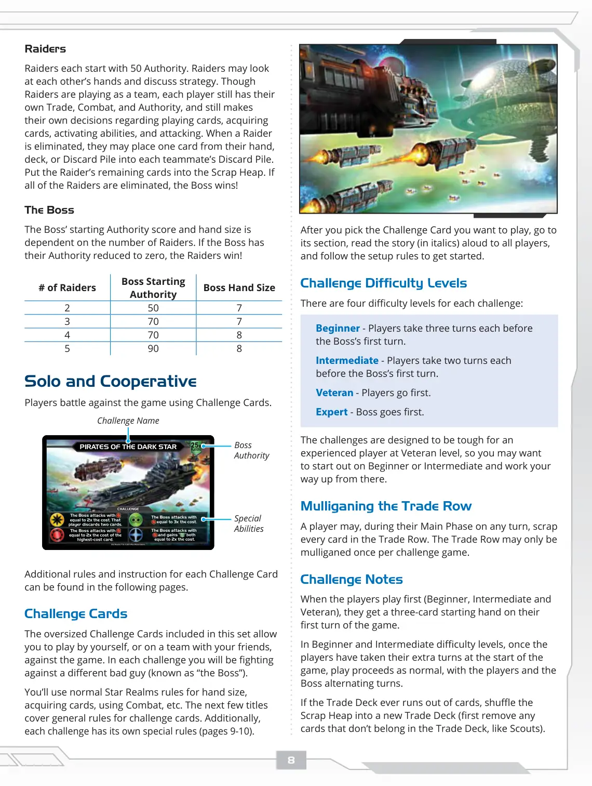
📝 第 9 页 AI 机翻对照（点击展开）
在你选择想要玩的挑战卡后，前往其章节，将故事（斜体）大声朗读给所有玩家，并遵循设置规则开始游戏。
挑战难度等级
每个挑战有四个难度等级：
初级 - 在Boss的第一个回合前，每位玩家进行三个回合。
中级 - 在Boss的第一个回合前，每位玩家进行两个回合。
高级 - 玩家先行动。
专家 - Boss先行动。
这些挑战在设计上，对于有经验的玩家来说高级难度是具有挑战性的，因此你可能希望从初级或中级开始，然后逐步提升。
重新洗牌交易行
玩家可以在任何回合的主要阶段期间，弃置交易行中的所有卡牌。每个挑战游戏中，交易行只能重新洗牌一次。
挑战说明
当玩家先行动时（初级、中级和高级），他们在游戏的第一回合获得三张起始手牌。
在初级和中级难度下，一旦玩家在游戏开始时完成了他们的额外回合，游戏正常进行，玩家和Boss交替进行回合。
如果交易牌库 ever 用完牌，将废牌堆洗成一个新的交易牌库（首先移除不属于交易牌库的卡牌，如侦察兵）。
掠夺者
每位掠夺者起始拥有50点权威。掠夺者可以查看彼此的手牌并讨论策略。虽然掠夺者是以团队形式游戏，但每位玩家仍然拥有自己的交易、战斗和权威值，并且在玩卡牌、获取卡牌、激活能力和攻击方面仍然做出自己的决定。当一名掠夺者被淘汰时，他们可以将自己手牌、牌库或弃牌堆中的一张牌放入每位队友的弃牌堆。将该掠夺者剩余的牌放入废牌堆。如果所有掠夺者都被淘汰，Boss获胜！
Boss
Boss的起始权威值和手牌大小取决于掠夺者的数量。如果Boss的权威值降至零，掠夺者获胜！
掠夺者数量
Boss起始权威值
Boss手牌大小
单人模式和合作模式
玩家使用挑战卡与游戏对战。
25x
玩家
挑战
挑战
Star Realms™ & © 2021 Wise Wizard Games
Star Realms™ & © 2021 Wise Wizard Games
Boss使用攻击力等于2倍费用的牌进行攻击并获得等于2倍费用的牌。
Boss使用攻击力等于3倍费用的牌进行攻击。
Boss使用攻击力等于最高费用卡牌2倍费用的牌进行攻击。
Boss使用攻击力等于2倍费用的牌进行攻击。该玩家弃置两张牌。
黑暗之星的掠夺者
挑战名称
Boss
权威值
特殊能力
每张挑战卡的额外规则和说明可以在以下页面找到。
挑战卡
本套中包含的加大版挑战卡允许
你可以独自游玩，或者与朋友组队，对抗游戏。在每个挑战中，你将与不同的反派（称为"Boss"）战斗。你将使用正常的《星际领域》(Star Realms)规则来处理手牌数量、获取卡牌、使用战斗等。接下来的几个章节涵盖了挑战卡牌的通用规则。此外，每个挑战还有其特殊规则（第9-10页）。
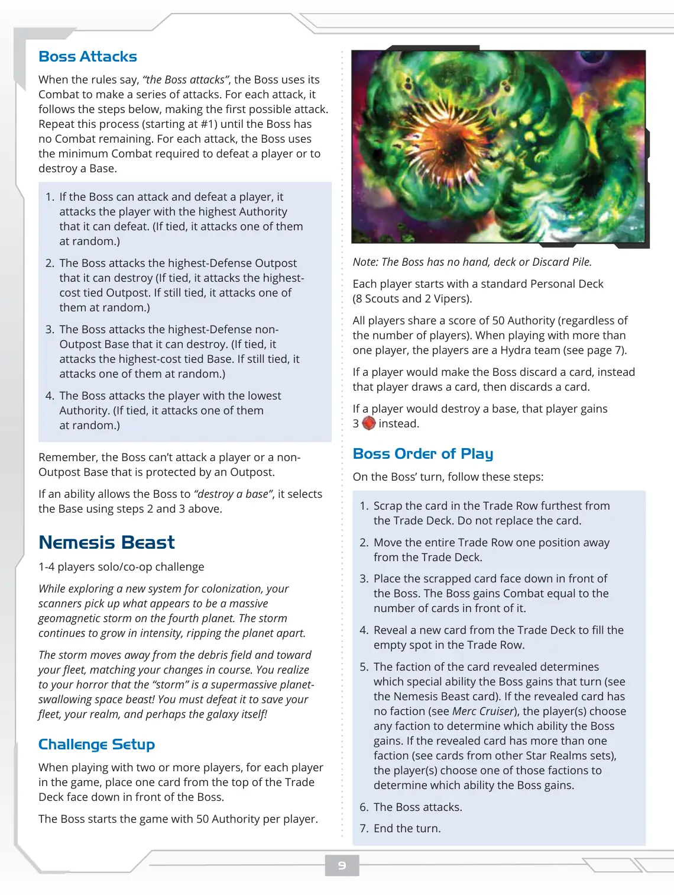
📝 第 10 页 AI 机翻对照（点击展开）
注意：Boss没有手牌、牌库或弃牌堆。
每位玩家起始时拥有标准个人牌库（8个侦察兵和2个毒蛇）。
所有玩家共享50点权威分数（无论玩家数量多少）。当超过一名玩家游玩时，玩家们是九头蛇团队（见第7页）。
如果玩家要使Boss弃牌，则改为该玩家摸一张牌，然后弃一张牌。
如果玩家要摧毁一个基地，则改为该玩家获得一个基地。
Boss行动顺序
在Boss的回合，遵循以下步骤：
1. 废弃贸易行中距离贸易牌库最远的卡牌。不要替换该卡牌。
2. 将整个贸易行向远离贸易牌库的方向移动一个位置。
3. 将废弃的卡牌面朝下放在Boss前面。Boss获得等于其前面卡牌数量的战斗力。
4. 从贸易牌库中揭示一张新卡牌以填补贸易行中的空位。
5. 揭示卡牌的派系决定了Boss该回合获得的特殊能力（见Boss怪兽卡）。如果揭示的卡牌没有派系（见雇佣巡洋舰），玩家选择任意派系来决定Boss获得哪种能力。如果揭示的卡牌有多个派系（见其他星域牌组中的卡牌），玩家选择其中一个派系来决定Boss获得哪种能力。
- Boss攻击。
- 结束回合。
Boss攻击
当规则说"Boss攻击"时，Boss使用其战斗力进行一系列攻击。每次攻击，它遵循以下步骤，进行第一个可能的攻击。重复此过程（从#1开始）直到Boss没有剩余战斗力。每次攻击，Boss使用击败玩家或摧毁基地所需的最低战斗力。
1. 如果Boss可以攻击并击败玩家，它会攻击它可以击败的权威值最高的玩家。（如果平局，它随机攻击其中之一。）
2. Boss攻击它可以摧毁的最高防御前哨站。（如果平局，攻击成本最高的平局前哨站。如果仍然平局，随机攻击其中之一。）
3. Boss攻击它可以摧毁的最高防御非前哨基地。（如果平局，攻击成本最高的平局基地。如果仍然平局，随机攻击其中之一。）
4. Boss攻击权威值最低的玩家。（如果平局，随机攻击其中之一。）
记住，Boss不能攻击被前哨站保护的玩家或非前哨基地。
如果某个能力允许Boss"摧毁一个基地"，它使用上述步骤2和3选择基地。
Boss怪兽
1-4人单人/合作挑战
在探索一个用于殖民的新星系时，你的扫描仪在第四颗行星上探测到似乎是一个巨大的地磁风暴。这个风暴
强度不断增强，将行星撕成碎片。
风暴离开碎片场，朝向你的舰队移动，与你航向的改变相匹配。你惊恐地意识到，这场"风暴"是一个巨大的、能够吞噬行星的太空巨兽！你必须击败它，才能拯救你的舰队、你的领域，或许甚至是整个银河！
挑战设置
当与两名或更多玩家游戏时，对于游戏中的每位玩家，从交易牌库顶放置一张牌面朝下放在Boss面前。
Boss在游戏开始时每位玩家拥有50点权威。
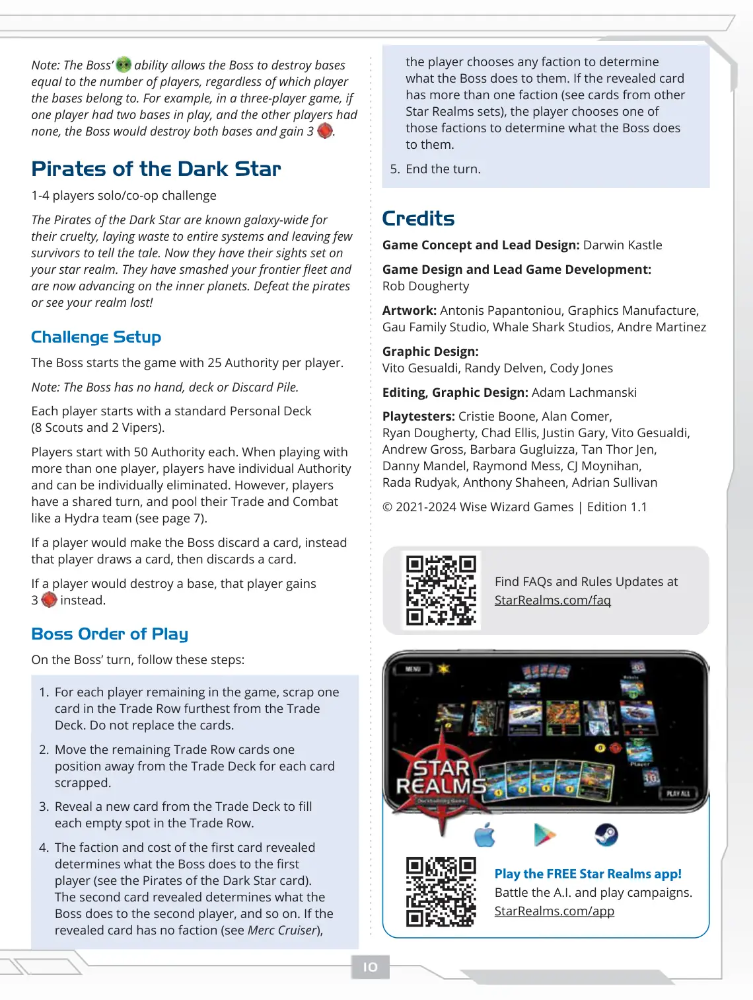
📝 第 11 页 AI 机翻对照（点击展开）
玩家选择任意派系来确定Boss对他们做什么。如果翻开的卡牌有多个派系（参见来自其他《Star Realms》系列的卡牌），玩家选择其中一个派系来确定Boss对他们做什么。
- 结束回合。
致谢
游戏概念与首席设计：Darwin Kastle
游戏设计与首席游戏开发：Rob Dougherty
美术：Antonis Papantoniou, Graphics Manufacture, Gau Family Studio, Whale Shark Studios, Andre Martinez
平面设计：Vito Gesualdi, Randy Delven, Cody Jones
编辑、平面设计：Adam Lachmanski
测试玩家：Cristie Boone, Alan Comer, Ryan Dougherty, Chad Ellis, Justin Gary, Vito Gesualdi, Andrew Gross, Barbara Gugluizza, Tan Thor Jen, Danny Mandel, Raymond Mess, CJ Moynihan, Rada Rudyak, Anthony Shaheen, Adrian Sullivan
© 2021-2024 Wise Wizard Games | 版本 1.1
注意：Boss的能力允许Boss摧毁等于玩家数量的基地，无论这些基地属于哪个玩家。例如，在三玩家游戏中，如果一个玩家有两个在 play 的基地，而其他玩家没有，Boss将摧毁这两个基地并获得3点。
暗星海盗
1-4人 单人/合作挑战
暗星海盗以其残酷闻名整个银河系，他们摧毁整个星系，很少有幸存者讲述这个故事。现在他们将目光投向了你的星域。他们摧毁了你的前沿舰队，现在正向内行星推进。要么击败海盗，要么眼睁睁看着你的星域沦陷！
挑战设置
Boss每名玩家开始游戏时拥有25点权威值。
注意：Boss没有手牌、牌库或弃牌堆。
每位玩家开始时拥有标准个人牌组（8个侦察舰和2个毒蛇）。
每位玩家开始时拥有50点权威值。当超过一名玩家游戏时，玩家拥有各自的权威值，可以被单独淘汰。然而，玩家拥有共享回合，并像九头蛇团队一样汇集他们的贸易和战斗值（参见第7页）。
如果玩家应该让Boss弃牌，则该玩家摸一张牌，然后弃一张牌。
如果玩家应该摧毁一个基地，则该玩家获得1点权威值。
Boss行动顺序
在Boss的回合，遵循以下步骤：
1. 对于游戏中剩余的每位玩家， scrap 贸易行中距离牌库最远的一张卡牌。不要替换这些卡牌。
2. 将剩余的贸易行卡牌每 scrap 一张就向远离牌库的方向移动一个位置。
3. 从牌库中翻开一张新卡牌填补贸易行中的每个空位。
4. 第一张翻开的卡牌的派系和费用决定了Boss对第一位玩家做什么（参见暗星海盗卡牌）。第二张翻开的卡牌决定了Boss对第二位玩家做什么，以此类推。如果
展示的卡牌没有阵营（见巡洋舰），
免费玩《Star Realms》应用！
与人工智能对战并玩战役。
StarRealms.com/app
在 StarRealms.com/faq 查找常见问题解答和规则更新
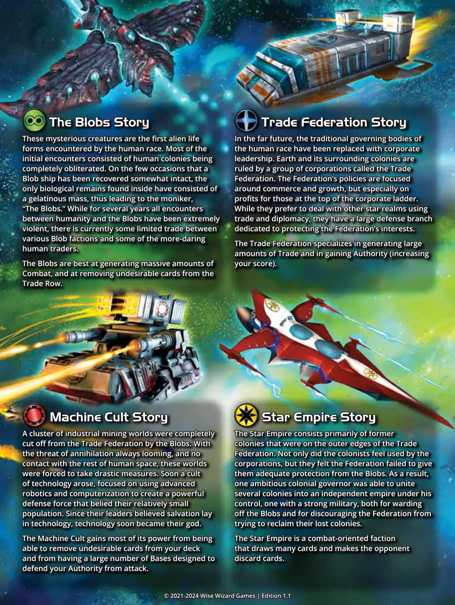
📝 第 12 页 AI 机翻对照（点击展开）
贸易联邦故事
贸易联邦故事
在遥远的未来，人类传统的 governing bodies
在遥远的未来，人类传统的 governing bodies
已被企业领导所取代。地球及其周围的殖民地
已被企业领导所取代。地球及其周围的殖民地
由一组名为贸易联邦的企业所统治。
由一组名为贸易联邦的企业所统治。
联邦的政策专注于商业和增长，但特别关注
联邦的政策专注于商业和增长，但特别关注
企业顶层人士的利润。
企业顶层人士的利润。
虽然他们更喜欢通过贸易和外交与其他星域打交道，
虽然他们更喜欢通过贸易和外交与其他星域打交道，
但他们有一个庞大的防御部门致力于保护联邦的利益。
但他们有一个庞大的防御部门致力于保护联邦的利益。
贸易联邦擅长产生大量的贸易并获取权威（增加
贸易联邦擅长产生大量的贸易并获取权威（增加
你的分数）。
你的分数）。
粘液怪故事
粘液怪故事
这些神秘生物是人类种族首次遇到的
这些神秘生物是人类种族首次遇到的
外星生命形式。最初的遭遇大多是人类殖民地
外星生命形式。最初的遭遇大多是人类殖民地
被完全摧毁。在少数粘液怪飞船
被完全摧毁。在少数粘液怪飞船
被 somewhat intact 地回收的情况下，在内部发现的
被 somewhat intact 地回收的情况下，在内部发现的
唯一生物遗骸是一团凝胶状物质，因此得出了
唯一生物遗骸是一团凝胶状物质，因此得出了
绰号，"粘液怪"。虽然几年来人类与粘液怪之间的所有遭遇
绰号，"粘液怪"。虽然几年来人类与粘液怪之间的所有遭遇
都极其暴力，但目前各种粘液怪派系和一些更大胆的
都极其暴力，但目前各种粘液怪派系和一些更大胆的
人类商人之间有一些有限的贸易。
人类商人之间有一些有限的贸易。
粘液怪最擅长产生大量的
粘液怪最擅长产生大量的
战斗，并从交易行中移除不需要的卡牌。
战斗，并从交易行中移除不需要的卡牌。
机器教故事
机器教故事
一群工业采矿世界被黏液族(Blobs)完全
与贸易联盟(Tade Federation)隔绝。由于
灭绝的威胁始终存在，并且与人类空间的
其他地方失去了联系，这些世界
被迫采取极端措施。很快，一个技术
教派应运而生，专注于使用先进的
机器人和计算机化技术来创建一支强大的
防御力量，这与其相对较少的
人口规模不相称。由于他们的领导人相信救赎在于
技术，技术很快成为了他们的神。
机械教派(Machine Cult)的大部分力量来自于能够
从你的牌库中移除不需要的卡牌
以及拥有大量旨在
保护你的权威(Authority)免受攻击的基地(Bases)。
星际帝国故事(Star Empire Story)
星际帝国主要由前
贸易联盟边缘的
殖民地组成。殖民者们不仅感觉自己被
公司利用，而且他们认为联盟未能给予
他们足够的保护以抵御黏液族。因此，
一位雄心勃勃的殖民总督成功地将
多个殖民地联合起来，组成一个由他控制的
独立帝国，这个帝国拥有强大的军事力量，既可以
抵御黏液族，也可以阻止联盟
试图收复他们失去的殖民地。
星际帝国是一个以战斗为导向的派系
，它能够抽大量卡牌并让对手
弃牌。
© 2021-2024 Wise Wizard Games | 版本 1.1